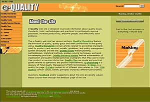

|
TQM
Trainings…yesterday…today…and tomorrow
By Rina
U. Alano
Yesterday…
Patricia and Rina conducted trainings namely Document and
Data Control and 5S: The Practice of Good Housekeeping for
the Office of the University Registrar (OUR) and Information
and Technology staff last August and September.
Today…Janet and Joel
team-up for developing the Change Management module, Jojo
and Joel split-up the TQM Education and Concepts of Improvement
module into two separate modules for modification and improvement.
Joel takes the lead for developing the Internal Quality Review
module.
Tomorrow…
Patricia and Janet are scheduled to give trainings
this October for the staff of the Library. Customer…is
Always the Customer and Document and Data Control trainings
will surely impart knowledge and appreciation to these participants.
E-quality
Website
by: Rina
Alano
A
new quality channel worth exploring for in the Internet is
the e-Quality web
site. e-Q as we fondly called it is not a diaper nor
stands for emotional quotient but a portal of quality-related
concepts, knowledge, tools, techniques, and practices, designed
to provide information, learning, and positive thinking by
making continuous improvement happen.
The e-Quality web site has various sections. Quality Evolution
features the evolution of quality, quality gurus and their
contributions in the quality arena. Quality Standards
contain articles related to accredited standards used for
products and services, models, guidelines, quality management
system structures and the like. Quality Tools feature
planning methodologies, statistical methods, problem solving
techniques, and good housekeeping practices. Quality Success
Stories feature achievements of organizations and quality-related
activities or programs that they use to make their product
or services distinct. Quality Tips are simple and practical
guides related to operations and process improvements. Q-Dictionary
is a glossary of Total Quality Management (TQM) terminologies.
Q-Jokes is a quality fun page. Q-Links contain
list of different sites related to TQM. TQM Quotes
contain values, beliefs, principles stated by different personalities.
Above sections of the site aim to increase knowledge and understanding
of the reader of different facets of quality applied in different
situations and cases.
Process Review and Improvement Office (PRIO) in coordination
with the Documentation Office (DOCU) will maintain the site.
The site design is primarily aimed for fast-loading and ease
of navigation. The navigation bar is conveniently located
at the left side and is consistent throughout the site. The
site is also searchable, powered by ATOMZ search engine for
those who are in a hurry. And everyday, different quotes regarding
quality can be seen at the home page.
Skol
Bukol Updates
By Rina
U. Alano
School
and study ventures of PRIO members:
Janet
decided to take the plunge and enrolled in MS in Financial
Engineering, a new graduate program offered by College of
Business and Economics of DLSU Manila. She is one of the student
pioneers of this course, so no notes to compare to from the
previous class. Good luck!
Joel
at lasts finished his diploma program in Research and Development
Management at University of the Philippines, Los Baños
and graduated last August. He is also currently enrolled at
the MBA program of the Graduate School of Business, DLS-PSI.
This bachelor has a plan to take another degree at Ateneo
(WOW!). Joel's ultimate goal is to complete his collection
of school id's and diplomas (but not girls) from popular universities
in the country.
Jojo
has a plan to take MS in Industrial Engineering here at De
La Salle. He's still getting Malou's (secretary of COE Graduate
School) sympathy by giving him more tips for the entrance
exam but his tactics didn't work (he!he!he!). Kidding aside,
Jojo is currently reviewing his mathematics (Calculus, Statistics,
etc) in preparation for the mind-boggling entrance exam. Tutor
anyone?
Amy
takes a breather from her MS in Information Technology at
College of Computer Studies, DLS-PSI. She's currently enjoying
her hassle-free schoolwork lifestyle.
Patricia
devotes her time in teaching Miggy's schoolwork and mastering
her culinary arts expertise. She finds it more fulfilling
to spend more time with his son and family life.
For
myself, I finally passed my comprehensive exam last June and
currently thinking of my project proposal to complete my requirements
in MS in Industrial Engineering at UP Diliman. I'm still enjoying
spending my quality time with my new baby, Gabby and new schoolboy,
Joshua than any school project right now. .
|